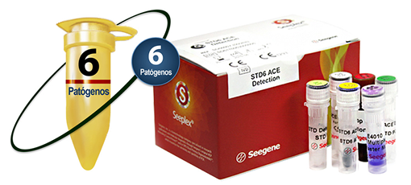

SEEPLEX® STD6 ACE DETECTION

INDICACIÓN DE USO:
La prueba Seeplex® STD6 ACE Detection está diseñada para detectar simultáneamente 6 patógenos causantes de enfermedades de transmisión sexual (ETS) en muestras de pacientes.
Analitos:
• Trichomonas vaginalis.
• Mycoplasma hominis.
• Mycoplasma genitalium.
• Chlamydia trachomatis.
• Neisseria gonorrhoeae.
• Ureaplasma urealyticum.
Muestras:
• Hisopado uretral.
• Hisopado vaginal.
• Hisopado cervical.
• Orina.
• Muestras de citología en base líquida.
CARACTERÍSTICAS:
• Ensayo de PCR punto final.
• Detección simultánea de 6 patógenos causantes de enfermedades de transmisión sexual.
• Cuenta con un control interno (STD IC), lo que permite monitorear tanto el procedimiento de aislamiento de ácidos nucleicos como comprobar la posibilidad de inhibición de la PCR.
INFORMACIÓN DE PEDIDO:
|
Nombre del producto |
Catálogo No. |
Presentación |
|
Seeplex® STD6 ACE Detection |
SD6600Y |
50 rxns |
PUBLICIDAD DIRIGIDA A
PROFESIONALES DE LA SALUD
Registro Sanitario No.: 2196R2016 SSA
Aviso de Publicidad No.: 173300202C3473
DATOS COMPLEMENTARIOS: Para mayor información comunicarse a:
amplibio-seegene diagnostics, S.A.p.i. DE C.V.
Teléfonos: (55) 5035-9808, 5377-1609,
5377-1615, 5377-1612
www.asdx.mx